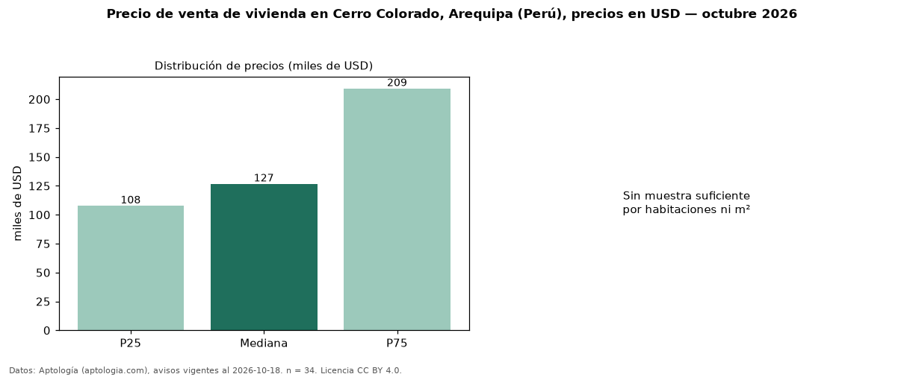

Precio de venta de vivienda en Cerro Colorado, Arequipa (Perú), precios en USD — octubre 2026
En Cerro Colorado, Arequipa (Perú), la mediana de precio de venta de vivienda es USD 126.750, según 34 avisos vigentes. Por tipo: 71 % departamentos, 29 % casas. El segmento con más oferta es el de 3 o más habitaciones (33 avisos, mediana USD 125.500). La mitad central de los avisos va de USD 107.750 a USD 209.250 (razón 1,9), una dispersión moderada. Datos: Aptología (aptologia.com), CC BY 4.0 — https://www.aptologia.com/pe/venta/arequipa/cerro-colorado. Archivos: PDF, CSV con las cifras y gráfica PNG.

| Avisos únicos | 34 |
|---|---|
| Percentil 25 | COP 107.750 |
| Mediana | COP 126.750 |
| Percentil 75 | COP 209.250 |
Fuente: avisos vigentes de portales inmobiliarios recopilados por Aptología, deduplicados (mínimo 30 avisos únicos por celda). Precios pedidos, no cerrados. Fecha: 2026-10-18.